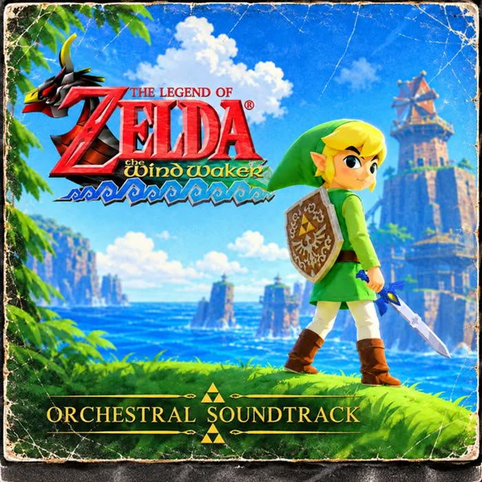
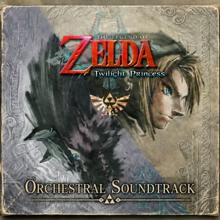

Zelda Wind Waker - Symphony
Symphonic orchestral arrangements of the music from The Legend of Zelda: The Wind Waker, the 2002 GameCube adventure. 12 tracks with 20-second previews.
Get this album- 1Title Theme
- 2The Legendary Hero
- 3Outset Island
- 4Grandma
- 5Inside a House
- 6The Great Sea
- 7Dragon Roost Island
- 8Dragon Roost Island V2
- 9Windfall Island
- 10Fairy's Fountain
- 11Farewell Hyrule King
- 12Farewell Hyrule King V2
Related
 Zelda Wind Waker ArabianArabian, 11 tracks
Zelda Wind Waker ArabianArabian, 11 tracks The Legend of Zelda: A Link to the Past Arabian Spanish FusionArabian, 22 tracks
The Legend of Zelda: A Link to the Past Arabian Spanish FusionArabian, 22 tracks Zelda Majora's Mask Arabian/SpanishArabian, 28 tracks
Zelda Majora's Mask Arabian/SpanishArabian, 28 tracks Zelda Majora's Mask - SymphonySymphony, 18 tracks
Zelda Majora's Mask - SymphonySymphony, 18 tracks Zelda Ocarina of time Arabian SpanishArabian, 40 tracks
Zelda Ocarina of time Arabian SpanishArabian, 40 tracks Zelda Ocarina of Time - SymphonySymphony, 31 tracks
Zelda Ocarina of Time - SymphonySymphony, 31 tracks
Zelda Twilight Princess - SymphonySymphony, 28 tracks